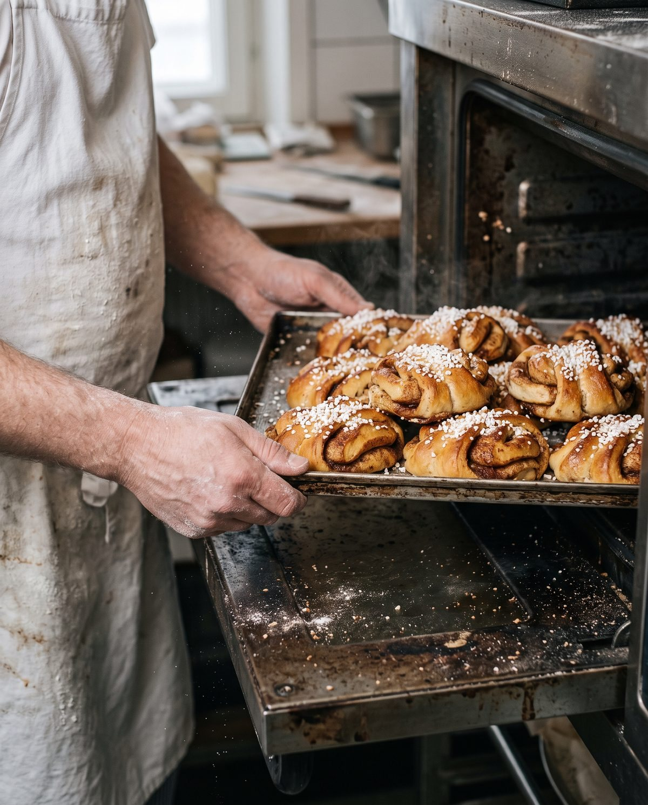

LeipomokahvilaKaarna
Hapanjuuri- ja ruisleipomo Tikkurilassa.
Ensimmäiset korvapuustit tulevat uunista 6.30. Arkisin ovi aukeaa seitsemältä, ja leipää on niin kauan kuin sitä riittää.
- Osoite
- Esimerkkikatu 32 min Tikkurilan asemalta
- Arkisin
- ma–pe 7–16lounas 10.30–14
- Lauantaisin
- la 9–15sunnuntaisin suljettu

10.30–14Lounas ma–pe
Tämän viikon lounas
Viikko 43, 19.–23.10. Joka päivä keitto, lämmin ruoka ja vegaaninen vaihtoehto.
ma 19.10.
KeittoBataatti-porkkanasosekeitto
Lämmin ruokaKarjalanpaisti
VegaaninenPunajuuri-linssipihvit
ti 20.10.
KeittoLohikeitto
Lämmin ruokaBroileria kermakastikkeessa
VegaaninenKikherne-pinaattikastike
ke 21.10.
KeittoMetsäsienikeitto
Lämmin ruokaUunilohi
VegaaninenLinssibolognese-lasagne
to 22.10.
KeittoHernekeitto, jälkiruokana pannukakku
Lämmin ruokaLihapullat ja ruskea kastike
VegaaninenKasvishernekeitto
pe 23.10.
KeittoKukkakaalikeitto
Lämmin ruokaPorsaan ulkofilee
VegaaninenTofu-kasviswok
Lounas 13,90 € · keittolounas 11,90 € · mukaan 12,50 € · eläkeläiset 12,40 € · Liha: Suomi
Koko viikko ja ruokavaliotKaarnan ruisleipä
Yksi leipä, kaksi päivää työtä.
600 gseitsemän vuotta vanha juuri18 h250 °C
6,50 € · ti ja pe Ruisleipä loppuu usein jo puoliltapäivin, perjantaisin varsinkin.
Varaa ruisleipä Miten leipä syntyyKaarna lyhyesti
Pieni leipomo aseman vieressä.
Anni Kaarnaoja leipoo, Tuomas Lehto keittää kahvin. Avasimme Tikkurilaan vuonna 2019, ja meitä on nyt neljä: Anni, Tuomas, leipuri Sanni ja kahvilassa Joel.
Aamulla pulla lähtee mukaan junaan, päivällä syödään lounas ja iltapäivällä viedään leipä kotiin. Ruis ja kaura tulevat pirkanmaalaiselta tilalta, maito ja voi lähimeijeriltä.

Tule käymään
Löydät meidät
Esimerkkikatu 301300 Vantaa (Tikkurila)
Tikkurilan asemalta kävelet kaksi minuuttia. Junalle ehtii hyvin, kun tilaat kahvin mukaan.
Aukioloajat
- ma–pe
- 7–16
- la
- 9–15
- su
- suljettu
- Aamiainen
- ma–pe 7–11, la 9–12
- Lounas
- ma–pe 10.30–14
- Leipomo
- kunnes loppuu
Poikkeusaukioloajat
- Pyhäinpäivä la 31.10.avoinna 10–14
- Itsenäisyyspäivä su 6.12.suljettu
Ei poikkeuksia tiedossa.